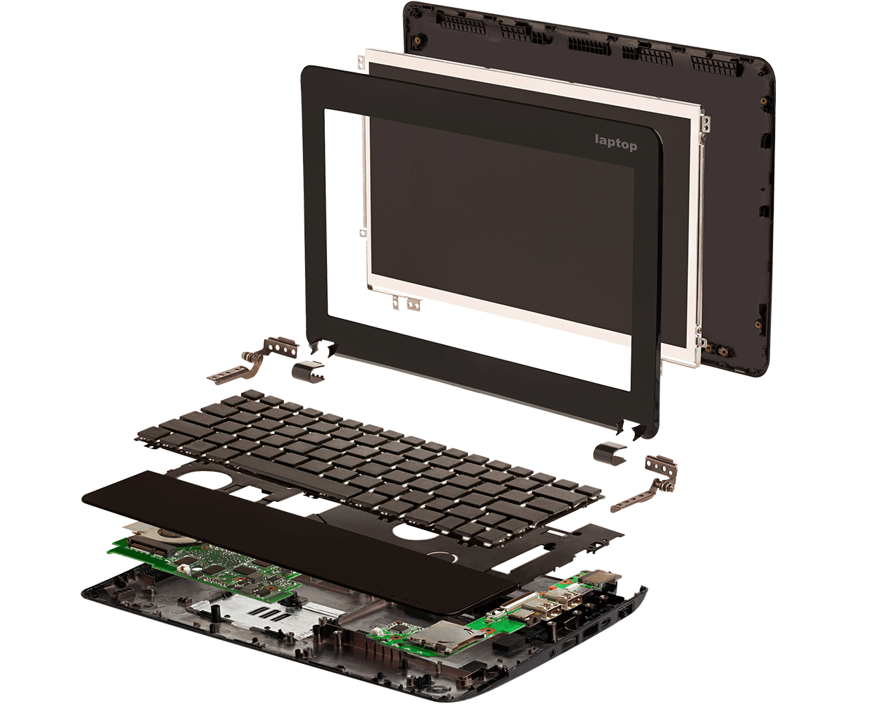

Учитывая пожелания клиентов и сложность процесса мы постоянно упрощали процесс оказания услуги.
С годами удалось достигнуть оптимального сервиса и цен, которые придутся вам по вкусу.
Чтобы добиться от картриджа качественной печати, его заправка производится качественными расходными материалами - Static Control. Этапы заправки картриджа:
Разборка;
Очистка от отработанного и неизрасходованного тонера
Чистка вала первичного заряда и других узлов картриджа
Наполнение картриджа тонером
Замена или перепрошивка чипа (если необходимо)
Сборка
Если при печати возникают деффекты - картридж следует восстановить.
При восстановлении картриджа осуществляется замена изношенных компонентов:
Фотобарабана
Лезвия магнитного вала
Вала заряда, втулок
и др.
* - Условия акции по tel. +38(099)106-23-15
РЕМОНТ ПЛАНШЕТОВ

В наше современное время планшетные компьютеры пользуются большой популярностью,
это можно объяснить великолепным сочетанием функционала устройства и его непревзойденной мобильностью.
Имея не очень большой размер, в планшет заложен великолепный потенциал и довольно внушительные характеристики!
С помощью этих удобных устройств пользователь может решать большую часть насущных задач!
Как всегда, основная часть обращений в наш сервисный центр, по ремонту планшетов, связана с
механическим повреждением экрана
механическим повреждением сенсора
замена разьема зарядки
Бывают случаи когда планшет попадает в воду и она проникает внутрь устройства.
Чем дольше планшет будет находиться в таком состоянии, тем больше элементов внутри будет подвергаться коррозии и это может привезти к дорогостоящему ремонту.
В нашем сервис центре выполняется качественный и профессиональный ремонт планшетов,
ремонт телефонов и других мобильных устройств.
Вы можете принести сломанный планшет в наш сервис центр по адресу - указанному ниже.
РЕМОНТ БРЕЛКОВ
Причин выхода из строя брелков огромное количество.
Здесь все зависит от модели сигнализации и сложности схемы построения ее элементов.
Следует рассмотреть типовые неполадки и возможные причины, по которым может понадобиться выполнить ремонт брелков.
Если автосигнализация не реагирует на брелок
В этом случае не стоит сразу расстраиваться и паниковать. Очень часто случается так, что выполнять ремонт брелков не требуется – достаточно просто проверить элемент питания и заменить его в случае необходимости. Но если это не поможет, тогда необходимо обратиться к профессионалам, так как причин этой неисправности может быть масса, начиная от выхода из строя передатчика брелока, заканчивая перегоранием отдельных элементов его платы.
Если брелок перестал «видеть» сигнализацию
В этом случае из строя могут выйти различные элементы, начиная от блока согласования, заканчивая дешифратором сигнала.
Сигнализация не реагирует на дополнительный брелок
В этом случае ремонт брелка автосигнализации может и не потребоваться. Очень часто бывает так, что устройство просто не прописано в системе. Но если после прописывания проблема не исчезает, тогда нужно искать неисправности в брелке.
Если разбился дисплей брелка
Мы производим замену дисплея брелка. Ознакомится с перечнем моделей, на которых возможна замена дисплея, можно в таблице.
Механические повреждения брелка
Эти факторы являются одними их самых распространенных. В результате физического воздействия могут порождаться различные элементы брелков. Обычно этими элементами являются антенны, кнопки и другие элементы корпуса. Очень часто ремонт брелков Tomahawk, ремонт брелков Scher-Khan и других сигнализаций сводится к замене дисплея брелка (если он оснащен данным элементом). Дисплеи, как правило, наиболее часто выходят из строя из-за механических воздействия на них по причине своей хрупкости.
Если вам потребовался ремонт брелков сигнализации, то не следует пытаться выполнить все самостоятельно. Современная автомобильная сигнализация – это довольно сложная система, разобраться в
которой без определенного уровня подготовки просто нереально.
Профессионалы без труда могут выполнить ремонт брелков.